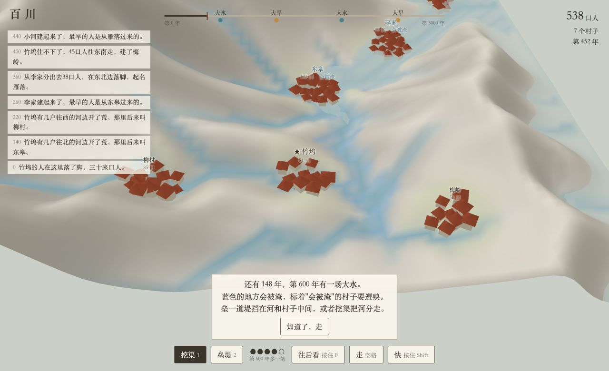

想表达什么
人很小，一代人只做得了一件事，
一场大水能冲掉几代人的心血。
可地记得：挖的渠成了河，垒的堤成了山梁，
三百年后人早没了，那道堤还叫着修它那人的名字。
反过来，河往哪拐，人就往哪搬。
玩完一局，记住的是一段这一族人和这条河纠缠几百年的历史，每局都不一样。规矩不用真，但每一条都替这件事服务。
它从哪来
做前两版时真让我上头的几个时刻，都是同一件事：
- 村子挑水踩出一条路，下雨时路成了沟，几场雨后把河拽到了村口。那道弯没人画过，是人走出来的。
- 什么河都没画，几百年的雨把一块斜坡冲出了山谷。
- 给柳村围了一圈堤挡大水，结果把它门口的河也挡开了，六十年后柳村整村搬走。
三个问题
玩家是谁
一族人。玩家是每一代的当家人，一代换一个，各有名字。他这一代做的事，刻着他的名字。
玩家做什么
每一代分一次人力：开田、垒堤、挖渠。然后按"过这一代"，二十五年的雨落下来。
玩家要什么
这一族的香火传下去，活过第三十代。中途灭族，这一局就到头。
玩家会在乎什么
祠堂；自己一代代垒起来、有名字的堤和渠；族谱上那一个个当家人。
一条链：每一下为什么有分量
像补刀：一刀是一个小得失，经济、战力、团战、推塔，一路连到水晶。这里是：
水 + 平地→田→粮→人→人力→开田 / 垒堤 / 挖渠→地变了→更多水和平地，或者挡住了大水
- 每一代都有小得失：过完一代，一行账：收成多少、人口增减、渠挖到哪、堤还差多少。
- 人力永远不够：想开田、想加堤、想挖渠，每一代只够一两样。
- 大事提前亮：时间线上标着几代以后的大水（像陷阵之志亮出虫子要打哪），所有小得失都朝着"赶在它之前"。
三样东西怎么咬在一起
| 东西 | 给你什么 | 拿走什么 |
|---|
| 水 | 田的命。大水退了留下一层淤泥，淹过的田来年特别肥。 | 淹田、冲房子、改道。水害和水利是同一样东西，所以玩家不会只想把水全挡住。 |
| 山 | 高处安全；能开梯田（不怕淹，可费力、产得少）；林子出木头。 | 砍了林子，山秃了，泥沙下河，河床一年年淤高。 |
| 平地 | 最肥。是河冲出来的，也会被河冲掉；淤出来的新地叫"新滩"。 | 怕淹。 |
| 人 | 人力从人来。 | 要吃饭。粮不够，人就往外跑。 |
堵和疏（大禹治水，不讲，让规矩自己长出来）
堵：垒堤
当代就见效。可水关在堤里，泥沙全落在河床上，河床越淤越高，堤得一代代往上加，人力越来越多被绑在"加堤"上。哪一代撑不住，一垮，水从高处倒灌，比不修还惨。黄河的"地上河"就是这么来的。
疏：挖渠分水
慢，一代挖不完，要子孙接着挖，挖到一半赶上大水可能白挖。可挖通以后水有了去处，渠会被水自己冲成河，越冲越稳，渠边还会长出新的田。
建筑：玩家会对什么投下感情
- 祠堂：第一代就有，族谱放在里面。祠堂被淹，是一族最大的事。
- 有名字的工程：渠和堤以修它那一代当家人命名，"守田堤""三郎渠"，三百年后还叫这个名字。
- 镇水碑：大水过后立的，立在哪，就是哪一年水到过哪。
- 河神庙：可以拿人力去祭。规矩里它不挡水，可族人心安，下一代少几个人往外跑。花不花这份力气，是玩家对"这族人信什么"的选择。
- 旧址：村子搬走了，老宅、老渠还在图上，长了草。
村和村之间（第二版再加）
打的不是仗，是水。同一条河，上游截了，下游就旱；你挖渠改道，别人的河就干了；你垒堤把水挡出去，水就去淹对岸。别的族照同样的规矩自己活，会记仇（下一代来扒你的堤，在上游筑坝截你的水），也会记恩（大水那年你开渠分了洪，旱年他们放水给你）。
拿玩家的眼睛走一遍前五代
开局。一条河谷，两边是山，河边一小片平地：一座祠堂、七八户人家、几块田。上方时间线三十格，第 4 格画着一个浪头。族谱第一页："第一代当家人陈守田。陈家四十口人，在这里落了脚。"
玩家心里：四代以后有大水，我的田全在河边。
第一代 陈守田 人力 4。开了 3 块田，剩 1 力在祠堂前垒了一小段堤。过这一代：河往南岸啃了一点，新开的一块田被冲掉一角。收成 +12，人口 40→47。
感到的：河在动，不是死的背景；我开的田不全保得住。
第二代 陈二 人力 5，大水还有两代。加堤，还是继续开田？开田人更多，可大水来了全淹。垒了 3 段，开了 2 块。人口 47→55。
第三代 陈三 人力 6，下一代就是大水。按住 F 预演：浪头漫过来，蓝色盖住南边那排田，堤后的祠堂没事。补齐了堤，剩下的力气开始挖往北山脚的分洪渠，这一代挖不完，也赶不上这次大水。族谱："陈三开始挖北渠。"
这一下的分量：在给后代挖，自己用不上。
第四代 陈四：大水 堤顶住了一半。北边保住，南边那排田全淹，冲走两户。水退了，淹过的地盖着一层新泥，颜色变深。族谱："大水。守田堤保住了祠堂。南田淹，死九口。"
难过，可也看见三代人垒的那道堤真挡住了水。它有名字，叫守田堤。
第五代 淹过的南田收成翻倍（淤泥肥）。可堤里的河床比上一代高了一截，堤得加高了。北渠挖了一半，接着挖吗？
"堵不如疏"开始自己长出来的那一刻，没人讲。
走完这五代，自己挑的毛病
- 前五代每一下都有分量：人力不够、大水亮在前面、堤和渠的后果几代后才全显出来。
- 缺别的族：没有他们，"淹到对岸"不疼。第一版只有自己一族，第二版加上下游邻居。
- 二十五年一回合，地形要变得够快才看得见；"过这一代"要放一段动画（下雨、涨水、河啃岸），不能啪一下跳过。
第一版做什么
- 地：一条河谷，两边山，中间河，河边一小片平地；山上林子。
- 一回合 = 一代 = 二十五年，过的时候放动画。
- 一族人：祠堂、人口、粮、人力；田开在平地上，收成看水和淤泥。
- 手：开田、垒堤（一段段，越垒越高）、挖渠（一截截，跨代接着挖）。
- 大水提前亮在时间线上，F 预演淹到哪；淹过的地变肥。
- 堤里的河床会淤高，堤要一代代加。
- 族谱：每代当家人有名字，工程用他的名字命名。
- 三十代结束或者灭族：一张标满名字的山水图，加一本族谱。
前两版，留作对照
第一版五块地，每块一两笔，然后看三千年。梓韬玩完："只能点一下，点完就只能看；不知道要看什么，连那是村子都没认出来。"
第二版一村人活三千年，挖渠垒堤，大水大旱提前亮，地方志。梓韬玩完："有了一些反馈，但不知道目标是什么，为什么要在意这些村子；元素就三样，挖得不够深。"

第二版的样子。能玩：baichuan/3d 第一版：关卡版